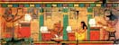

|  |
Egyptology Resources Bulletin Board |
 |
Requests for information 2003 |
30/11/03: Hunting dogs
I am writing up a PhD on the ecology of hares in Abu Dhabi UAE. As part of the introduction chapter I wanted to include some background information on the cultural significance of hares and specifically hare hunting in the region. I read several un-referenced sources on the internet stating that in ancient Egypt, the birth of a hunting dog puppy was seen second in importance only to the birth of a son. Is there a reference to this? Also that tomb walls were adorned with images of hare hunting and hunting dogs, which tombs and from when ?
I would appreciate any help with finding references for these two statements.
Christopher Drew cdrew@emirates.net.ae
19/11/03: Data on Ancient Egyptians
I have a GCSE student who would like to find some statistics about Ancient Egyptians e.g. height, weight, age at death, or any other numerical statistics about individuals.
I'd be very grateful for any books or web sites you could suggest.
Eugenie Gibbens ejag58@hotmail.com
06/11/03: Tut foetuses
Re the two foetuses from the tomb of Tut. I know they are now in the Department of Anatomy at Cairo University, and the coffins in the Cairo Museum. Does anyone know the results of any tests etc carried out on them, and where they might be published?
Wojciech Bobilewicz
Poland
wojciech.bobilewicz@pl.pwc.com
06/03/03: Doors
Is there any archaeological or epigraphical evidence for the use of doors of precious materials in Egypt? Any help or recomended bibliography would be deeply appreciated and -- of course -- fully acknowledged! Thanks in advance.
Peter Schultz
American School of Classical Studies
Athens GREECE
schultz@ascsa.edu.gr or schultzpeter@hotmail.com
03/03/03: Reiser
Does anyone have information about a Nineteenth-century photographer named Reiser who worked in Egypt in the 1880s? Full name? Nationality? Published references? Thanks,
James F. Romano
Brooklyn Museum of Art Patrom@aol.com
Posts from 2002 will be found here
Posts from 2001 will be found here
Posts from 2000 will be found here
Posts from 1999 will be found here
Unless otherwise indicated, © Nigel Strudwick 1994-2016